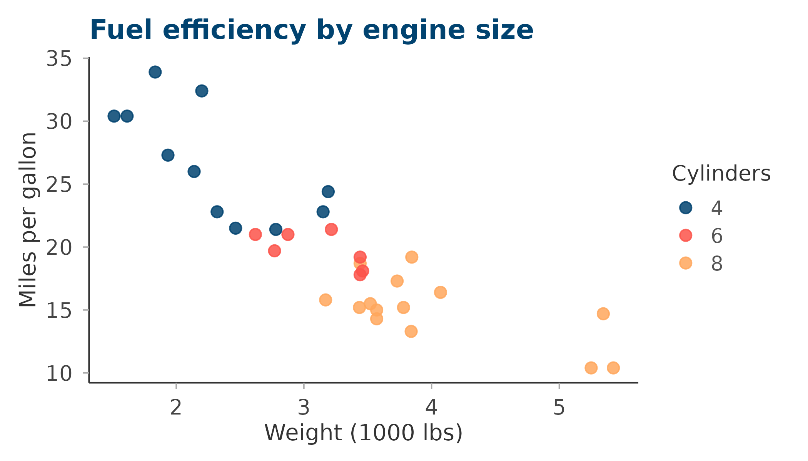
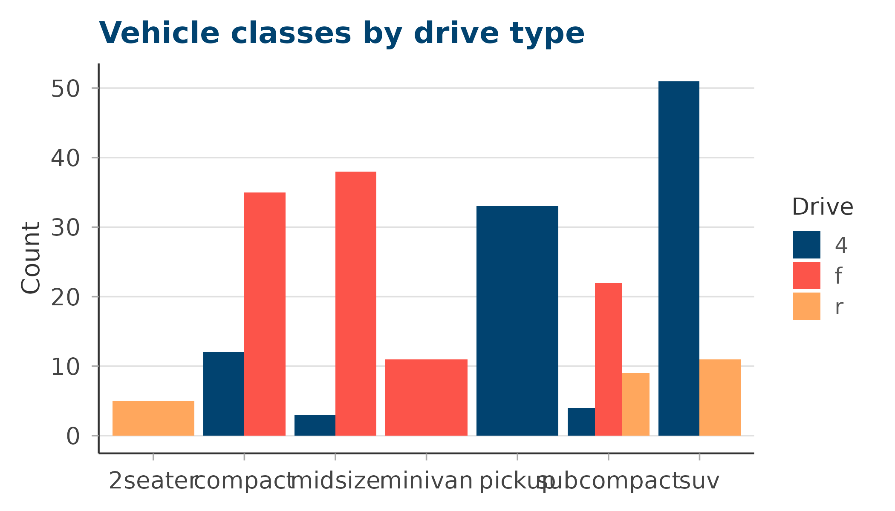
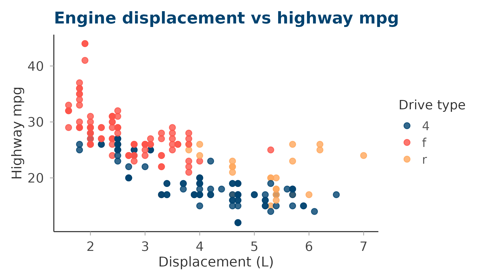
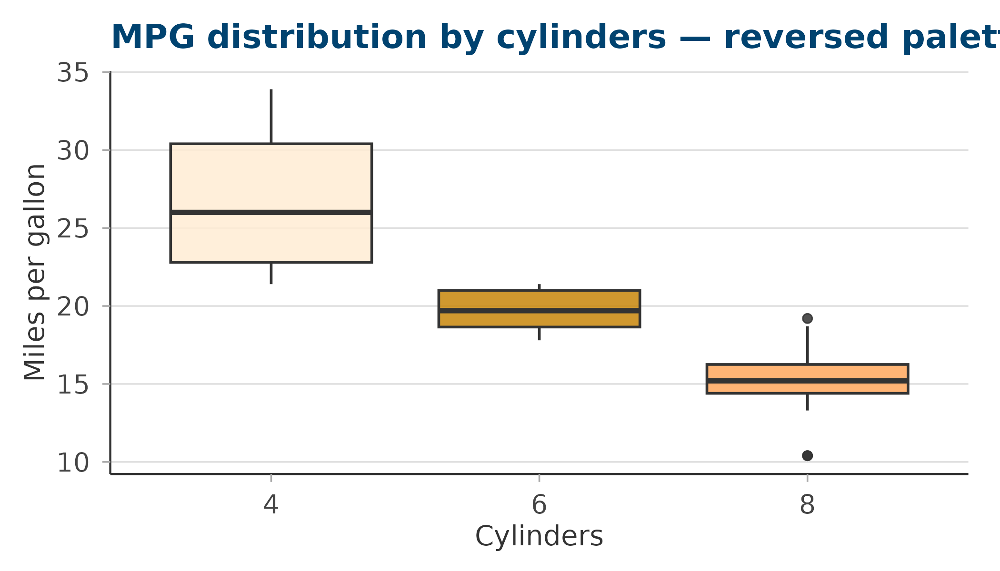

The qualitative palettes are designed for categorical
data where each colour encodes a distinct group. circadia
provides two: main (8 colours) for complex figures, and
core (5 colours) as a compact everyday subset.
The main palette
Eight brand colours spanning the full chromatic range — use when you have up to 8 categorical groups.
Click any swatch to copy the hex code.
ggplot(mtcars, aes(wt, mpg, colour = factor(cyl))) +
geom_point(size = 3, alpha = 0.85) +
labs(
title = "Fuel efficiency by engine size",
colour = "Cylinders",
x = "Weight (1000 lbs)",
y = "Miles per gallon"
) +
scale_colour_circadia() +
theme_circadia()
ggplot(mpg, aes(class, fill = drv)) +
geom_bar(position = "dodge") +
labs(
title = "Vehicle classes by drive type",
fill = "Drive",
x = NULL, y = "Count"
) +
scale_fill_circadia() +
theme_circadia(grid = "y")
The core palette
A compact 5-colour subset — the four anchors plus ochre. Use this for figures with five or fewer groups where you want the cleanest possible colour separation.
ggplot(mpg, aes(displ, hwy, colour = drv)) +
geom_point(size = 2.5, alpha = 0.8) +
labs(
title = "Engine displacement vs highway mpg",
colour = "Drive type",
x = "Displacement (L)", y = "Highway mpg"
) +
scale_colour_circadia(palette = "core") +
theme_circadia()
Reversing the palette
Pass reverse = TRUE to flip the colour order — useful
when you want the lightest colour to map to the first factor level.
ggplot(mtcars, aes(factor(cyl), mpg, fill = factor(cyl))) +
geom_boxplot(alpha = 0.85, show.legend = FALSE) +
labs(
title = "MPG distribution by cylinders — reversed palette",
x = "Cylinders", y = "Miles per gallon"
) +
scale_fill_circadia(palette = "core", reverse = TRUE) +
theme_circadia(grid = "y")
Retrieving colours directly
Use circadia_palette() when you need the raw hex values
— for example, to pass to ggplot2::scale_colour_manual() or
base R graphics.
# Full main palette
circadia_palette("main")
#> deep_blue coral_red amber ochre antique_white
#> "#014370" "#FC544A" "#FFA75D" "#C8860A" "#FFECD4"
#> mid_blue steel_blue pale_teal
#> "#1B6799" "#4A9BBF" "#9BDFE2"
# First three colours from core
circadia_palette("core", n = 3)
#> deep_blue coral_red amber
#> "#014370" "#FC544A" "#FFA75D"
# Reversed blues
circadia_palette("core", reverse = TRUE)
#> antique_white ochre amber coral_red deep_blue
#> "#FFECD4" "#C8860A" "#FFA75D" "#FC544A" "#014370"